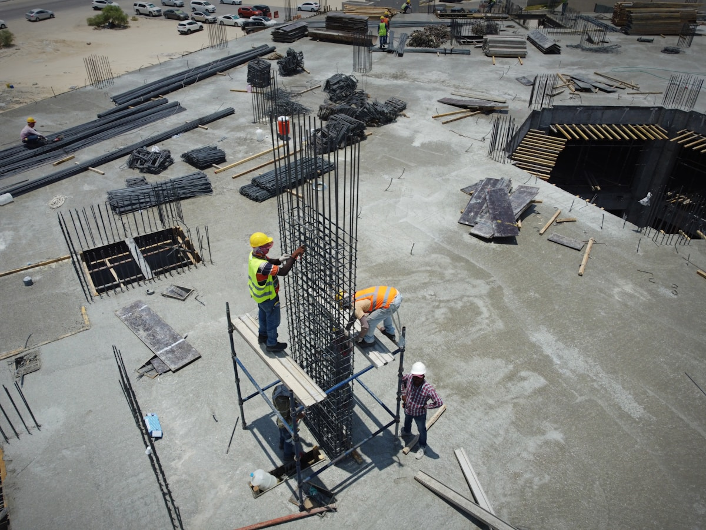

Qu'est-ce qu'une zone sismique et comment est-elle définie ?
Une zone sismique désigne une portion du territoire caractérisée par un niveau d'aléa sismique, c'est-à-dire la probabilité qu'un séisme d'une certaine intensité s'y produise sur une période donnée. En France, le zonage est fixé par le Code de l'environnement : l'article R563-4, issu du décret n° 2010-1254 du 22 octobre 2010, divise le territoire en cinq zones, et l'article D563-8-1, issu du décret n° 2010-1255 du même jour, classe chaque commune. Les règles de construction qui en découlent sont fixées par l'arrêté du 22 octobre 2010, modifié depuis, qui s'appuie sur l'Eurocode 8 (NF EN 1998).
Chaque zone est associée à une accélération de référence du sol (agr), exprimée en m/s². Elle représente l'intensité du mouvement du sol à prendre en compte dans les calculs, pour un sol de référence rocheux (classe A de l'Eurocode 8).
Aléa sismique ≠ risque sismique. L'aléa désigne la probabilité physique du phénomène naturel. Le risque sismique, lui, intègre également la vulnérabilité des constructions et l'exposition des personnes. Deux communes peuvent afficher le même aléa mais présenter un risque très différent selon la qualité et l'âge de leur bâti existant.
Les 5 zones sismiques officielles en France
Depuis le 1er mai 2011, date d'entrée en vigueur du classement des communes, chaque commune française est rattachée à l'une des cinq zones de sismicité suivantes :
| Zone | Niveau de sismicité | Accélération agr | Exemples de territoires concernés |
|---|---|---|---|
| Zone 1 | Très faible | 0,4 m/s² | Tout le département du Tarn (Albi, Carmaux), l'ouest et le sud de l'Aveyron, la Guyane |
| Zone 2 | Faible | 0,7 m/s² | La plus grande partie de l'Aveyron (dont Rodez), La Réunion |
| Zone 3 | Modérée | 1,1 m/s² | Mayotte, une partie de l'Isère, les cantons d'Antibes, Cannes et Grasse dans les Alpes-Maritimes |
| Zone 4 | Moyenne | 1,6 m/s² | Nice et la plus grande partie des Alpes-Maritimes, Grenoble, Annecy et la plus grande partie de la Haute-Savoie |
| Zone 5 | Forte | 3,0 m/s² | Guadeloupe, Martinique, Saint-Martin |
Les limites de zones suivent souvent les cantons, et non les départements : un même département peut compter deux ou trois zones. Le classement renvoie en outre au découpage administratif de 2008 ; pour une commune fusionnée depuis, vérifiez la parcelle sur Géorisques.
Ces accélérations valent pour un sol rocheux. Dans les calculs, la nature du sol de fondation (classes A à E de l'Eurocode 8) amplifie plus ou moins le mouvement, et un coefficient d'importance l'augmente pour les bâtiments les plus sensibles.
Comment vérifier la zone sismique de votre commune ?
Plusieurs outils permettent d'identifier rapidement la zone de sismicité d'une commune :
Le portail Géorisques
La source de référence est le portail Géorisques (georisques.gouv.fr), du ministère de la Transition écologique. En saisissant une adresse ou une commune, on obtient une fiche listant les risques naturels et technologiques qui la concernent, dont la zone de sismicité. Aux Antilles, c'est aussi sur Géorisques que sont publiés les spectres de microzonage (voir plus bas).
Le Plan Local d'Urbanisme (PLU)
Le PLU ou le Document d'Information Communal sur les Risques Majeurs (DICRIM), disponible auprès de la mairie, précise également le classement de la commune. Il indique surtout si la commune est couverte par un Plan de Prévention des Risques (PPR) sismique, qui peut imposer des règles plus strictes que la réglementation nationale.
Consulter directement un bureau d'études structure
Avant tout dépôt de permis de construire ou démarrage d'étude, le bureau d'études vérifie systématiquement la zone sismique et la catégorie d'importance du bâtiment (voir section suivante). Ce contrôle conditionne les règles de calcul applicables et le contenu de la note de calcul parasismique.
Attention aux communes frontalières. Dans certains secteurs, deux communes adjacentes appartiennent à des zones de sismicité différentes. C'est le cas en Aveyron, où l'ouest et le sud du département sont en zone 1 et le reste en zone 2. Un terrain en limite communale mérite une vérification sur la parcelle elle-même. Le bureau de contrôle ou le bureau d'études peut effectuer cette vérification lors de la phase d'avant-projet.
Quelles obligations réglementaires selon la zone sismique ?
La zone sismique ne détermine pas à elle seule les obligations : il faut croiser ce classement avec la catégorie d'importance du bâtiment, définie par l'article R563-3 du Code de l'environnement et détaillée par l'arrêté du 22 octobre 2010.
Les catégories d'importance
- Catégorie I : bâtiments sans activité humaine de longue durée (hangars, abris, annexes non habitées)
- Catégorie II : maisons individuelles, habitat collectif et bureaux de 28 m de haut au plus, établissements recevant du public (ERP) de 4e et 5e catégorie hors écoles, bâtiments de bureaux ou industriels accueillant au plus 300 personnes, parcs de stationnement publics
- Catégorie III : écoles, ERP de 1re à 3e catégorie, bâtiments de plus de 28 m
- Catégorie IV : bâtiments indispensables à la sécurité civile, à la défense ou au maintien de l'ordre public (centres de secours, gestion de crise…)
La combinaison zone × catégorie détermine les règles applicables à un bâtiment neuf « à risque normal » :
| Zone sismique | Cat. I | Cat. II — maison individuelle | Cat. II — autres bâtiments | Cat. III et IV |
|---|---|---|---|---|
| Zone 1 — très faible | Aucune règle | Aucune règle | Aucune règle | Aucune règle |
| Zone 2 — faible | Aucune règle | Aucune règle | Aucune règle | Eurocode 8 |
| Zone 3 — modérée | Aucune règle | Eurocode 8, ou guide CPMI-EC8 zones 3-4 (éd. 2021) | Eurocode 8 | Eurocode 8 |
| Zone 4 — moyenne | Aucune règle | Eurocode 8, ou guide CPMI-EC8 zones 3-4 (éd. 2021) | Eurocode 8 | Eurocode 8 |
| Zone 5 — forte | Aucune règle | Eurocode 8, ou guide CPMI-EC8 zone 5 (éd. 2020) | Eurocode 8 | Eurocode 8 |
Les guides CPMI-EC8 (construction parasismique des maisons individuelles) sont publiés par le ministère. Ils proposent des dispositions simplifiées, sans calcul complet, pour les maisons qui respectent leur domaine d'application ; au-delà, c'est l'Eurocode 8. Les anciennes règles PS-MI 89 révisées 92 et CP-MI Antilles ne figurent plus dans l'arrêté du 22 octobre 2010 tel qu'il est en vigueur : elles ne sont applicables dans aucune zone.
Partout où ces règles s'appliquent, une attestation parasismique est aussi exigée, au dépôt du permis de construire et à l'achèvement des travaux. Depuis le 1er janvier 2024, cela vaut aussi pour les maisons individuelles en zones 3, 4 et 5. En zones 1 et 2, une maison individuelle n'est soumise ni aux règles parasismiques ni à l'attestation.

Les Antilles en zone sismique 5 : un cas particulier
La Guadeloupe, la Martinique et Saint-Martin sont classées en zone de sismicité 5, « forte », la plus élevée de l'échelle réglementaire nationale. Avec une accélération de référence de 3,0 m/s², soit plus de sept fois celle de la zone 1, la conception parasismique y structure tous les projets de construction.
Cette situation s'explique par la position de l'archipel sur la zone de subduction des Petites Antilles, où la plaque nord-américaine plonge sous la plaque caraïbe. Cette interface produit régulièrement des séismes importants, dont celui de 1843 et, plus récemment, celui des Saintes en 2004.
Aux Antilles, toutes les constructions de catégorie II à IV sont soumises aux règles parasismiques. Les immeubles, commerces, équipements publics et bâtiments industriels sont calculés selon l'Eurocode 8. Une maison individuelle peut l'être selon l'Eurocode 8 ou selon le guide CPMI-EC8 zone 5 (édition 2020), si elle entre dans son domaine d'application. Depuis le 1er janvier 2024, une attestation parasismique est exigée au dépôt du permis (pièce PCMI13 ou PC12, souvent appelée AT1) et à l'achèvement des travaux (pièce AT.2 de la déclaration d'achèvement), maisons individuelles comprises.
Dans plusieurs communes de Guadeloupe (Petit-Bourg, Lamentin, Goyave, Capesterre-Belle-Eau, Trois-Rivières, Les Abymes, Morne-à-l'Eau, Le Gosier, Sainte-Anne, Saint-François, Le Moule), de Martinique (Rivière-Salée, Les Trois-Îlets, Le François, Trinité, Le Vauclin, Le Robert) et à Saint-Martin, un arrêté du 17 juin 2022 permet de remplacer le spectre réglementaire par un spectre de microzonage sismique, publié sur Géorisques, qui tient compte des effets de site locaux.
En zone 5, les dispositions constructives de l'Eurocode 8 pèsent lourdement sur la conception : cadres de confinement, longueurs de recouvrement, espacement des armatures transversales, ferraillage des nœuds poteaux-poutres. À cela s'ajoute, en Guadeloupe et en Martinique, une réglementation spécifique au vent cyclonique (décret du 23 novembre 2023 et arrêté technique de 2024), à vérifier pour chaque projet.
Comment MH Structure vous accompagne
MH Structure intervient sur l'ensemble du territoire français, avec une expertise approfondie en zone sismique 5 (Guadeloupe, Petit-Bourg) et en France métropolitaine (Carmaux, Tarn). Nos prestations couvrent l'ensemble de la chaîne réglementaire :
- Identification de la zone sismique et de la catégorie d'importance applicable à votre projet
- Choix des règles de calcul : Eurocode 8 ou guide CPMI-EC8, selon le type de bâtiment, la zone et la catégorie
- Notes de calcul parasismiques complètes, conformes à l'Eurocode 8 et à son annexe nationale française
- Plans de coffrage et d'armatures intégrant les dispositions constructives parasismiques (cadres de confinement, chevauchements, nœuds)
- Attestations parasismiques au permis et à l'achèvement pour les maisons individuelles en zones 3 à 5, et études remises au contrôleur technique pour les autres bâtiments
- Diagnostics sismiques sur bâtiments existants pour les projets de réhabilitation ou de changement de destination
Vous ne savez pas dans quelle zone sismique se trouve votre terrain ? Contactez-nous : nous vérifions le classement de votre commune et vous indiquons rapidement si votre projet est soumis à la réglementation parasismique, et laquelle. Devis gratuit sous 48h.
Photos : Dan Meyers, Ivan Bandura, NOAA — via Unsplash